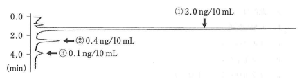

口腔由来の口臭の主な原因物質はVSC（Volatile Sulfur Compounds：揮発性硫黄化合物）である。歯周病原細菌などの嫌気性菌が含硫アミノ酸（メチオニン、システイン）を分解して産生する。
| 物質名 | 化学式 | 嗅覚閾値 | 主な由来 |
|---|---|---|---|
| 硫化水素 | H₂S | 1.5 ng/10mL | 舌苔（歯周病の有無に関わらず検出） |
| メチルメルカプタン | CH₃SH | 0.5 ng/10mL | 歯周ポケット（歯周病で比率↑） |
| ジメチルサルファイド | (CH₃)₂S | 0.2 ng/10mL | 血液由来（全身疾患） |
硫化水素 → メチルメルカプタン → ジメチルサルファイド
※分子量の小さい順に検出される
硫化水素は舌苔から産生されるため、歯周病の有無にかかわらず高濃度に検出される。
メチルメルカプタンは歯周ポケット内の歯周病原細菌から産生されるため、歯周病患者では比率が高くなる。
| 口臭の種類 | 主なVSC | 特徴 |
|---|---|---|
| 生理的口臭 | 硫化水素優位 | 舌苔由来、起床時に強い |
| 歯周病由来 | メチルメルカプタン比率↑ | 歯周ポケット由来 |
| 全身疾患由来 | ジメチルサルファイド | 血液由来（肝疾患など） |
VSCは含硫アミノ酸から産生される。特にメチオニンとシステインが前駆物質となる。
VSC以外にも以下の物質が口臭の原因となる：
※これらは舌ブラシでは減少しない（VSCとは異なる経路）
口腔由来の口臭症で歯周病罹患の有無にかかわらず高濃度に検出されるのはどれか。1つ選べ。
【解説】硫化水素は主に舌苔から産生されるため、歯周病の有無にかかわらず検出される。メチルメルカプタンは歯周病で比率が高くなる。
口臭検査で主に検出された揮発性硫黄化合物のうち、メチルメルカプタンの比率が高くなると考えられるのはどれか。1つ選べ。
【解説】メチルメルカプタンは歯周ポケット内の歯周病原細菌から産生されるため、歯周病由来の口臭で比率が高くなる。
口臭の原因の硫化物となるアミノ酸はどれか。1つ選べ。
【解説】メチオニンは含硫アミノ酸であり、VSC（特にメチルメルカプタン）の前駆物質となる。システインも含硫アミノ酸だが選択肢にない。
歯周炎を認めない真性口臭症患者のガスクロマトグラフィー検査結果を図に示す。
検出された物質①〜③の組合せで正しいのはどれか。1つ選べ。

【解説】ガスクロマトグラフィーでは分子量の小さい順に検出される。硫化水素(34)→メチルメルカプタン(48)→ジメチルサルファイド(62)の順。
舌ブラシの使用によって減少する口臭の原因物質はどれか。2つ選べ。
【解説】舌ブラシで舌苔を除去することでVSC（メチルメルカプタン、ジメチルサルファイド、硫化水素）が減少する。アセトンは糖尿病由来、カダベリンは腐敗臭、トリメチルアミンは魚臭症候群で、いずれも舌苔由来ではない。